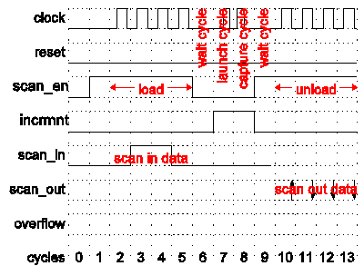
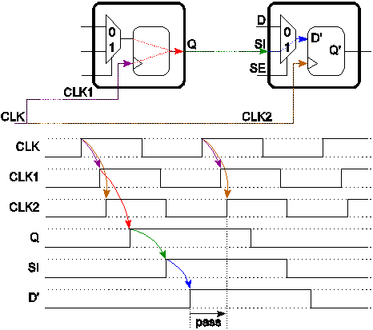
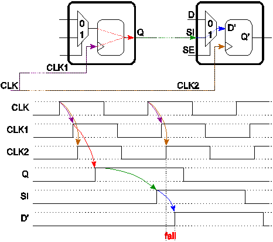
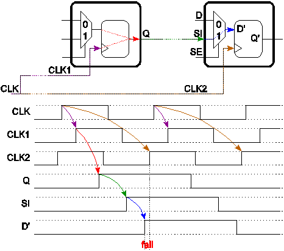

An Introduction to Scan Test for Test Engineers (Part 2 of 2)
Markus Seuring
Paper ID 115877
Part 1
Part one covers the concept of scan test, scan cell designs, full and partial scan, scan clocks, scan pattern generation and scan compression.
Targeted fault models of scan tests
The classical fault model for a scan test is the single stuck-at fault (SSF), introduced in 1959 [3]. Basically, in this model a single line is erroneously stuck-at 0 or stuck-at 1. Often the SSF model is just called the stuck-at fault model, but this is not accurate, since multiple stuck-at faults would mean a considerably larger set of faults that can be hardly handled by ATPG algorithms.
Some properties of the SSF model:
- For a design, the number of SSFs increases linearly with the number of gates (or flipflops or latches or transistors.)
- Given the limited number of potential SSFs in a design, the ratio, how many of the SSFs can be detected by a given scan test, is a metric for the quality of this scan test.
- In particular for highly efficient scan patterns just focusing on a SSF model, coverage of other faults and defects might not be that good [5] and this can be improved, if the ATPG tool is constrained to detect each SSF n-times and not only with one pattern (n-detect SSF scan patterns.) [2][4]
While the SSF is based on the assumption that a certain line is stuck at 0 or 1 for ever, the gate delay fault model assumes that because of an error at a single gate a line is just very slow switching either from 0 to 1 (slow-to-rise) or from to 1 to 0 (slow-to-fall) - with the same results: the functionality of the DUT is erroneous. Obviously, the number of SSFs equals the number of gate delay faults.
In order to test for gate delay faults two types of cycles are required between the load and unload of scan chains:
- First a launch cycle that excites a transition (0 to 1 or 1 to 0) starting from a scan cell to the gate/line to be tested.
- A capture cycle that is used to check whether this transition ran through the gate/line in a timely manner and was captured by the next scan cell along the path after a given clock period.
Obviously, launch and capture should be executed with a certain frequency that is related to the timing constraints for normal operation of the device. Therefore, scan tests for (gate) delay faults are useful to check that a DUT can "run fast enough" or to perform speed grading.
Any test for delay faults consists of a launch cycle and a capture cycle or a sequence of these cycles with a frequency, that is often higher than the scan shift frequency. This raises the problem how to generate these higher frequencies; that has already been discussed in the previous section "Scan Clock Generation". Figure 5 is showing a scan pattern with a launch cycle (cycle 7) and capture cycle (cycle 8).

The requirement of performing a launch cycle and a capture cycle for each gate delay fault results in stronger constraints for ATPG algorithms, therefore, the achievable coverage for gate delay faults is usually 3% to 10% lower than for SSFs.
While the gate delay fault model assumes, that a transition is not propagated in a timely manner because of a large delay at a certain line or gate, the path delay model assumes, that along a certain path signals are propagated too slowly because of probable multiple small erroneous delays along the path, which add up to an effective error. Because of forking and re-converging paths the number of all possible path delay faults is growing exponentially. So for large designs it is not possible to address all possible paths. Therefore, ATPG tools should be constrained to targeting only certain paths that are known to be critical - for example, as a result of a static timing analysis (STA). In many cases an ATPG tool is not able to find a pattern to test a certain path - in particular, if the pattern has to be "robust", i.e. for all gates along the transition propagation path, all other inputs of these gates are constant.
The scan test for gate delay and path delay faults is called at-speed scan test or "AC scan test". Accordingly, the scan test for SSFs is often called "DC scan test". For modern designs it is quite common to test not only for SSFs but also for delay faults.
The bridging fault model assumes, that there is a bridge between two lines that should be separated, for example, geometrical structure in the layout that are very close and even with optical proximity correction under certain manufacturing conditions these structures are bleeding into one another. Then the fault model is, that the "aggressor" line determines the value of the "victim" line via the bridge.
One might consider also two lines located so closely in the layout, that a strong signal transition in the "aggressor" line might change the signal behavior in the "victim" line. For example, a signal transition in the opposite direction might get delayed in the "victim" line because of this interaction.
Pairs of lines that are candidates for bridging faults are usually extracted from the layout. ATPG tools read as an input a list of such candidates and then generate scan test patterns testing for these pairs.
Independent of the targeted fault model - SSF, n-detect SSF, gate delay or path delay faults, bridging faults - the generated scan vectors show no fundamental differences. For any scan pattern it is the same sequence: first scan load data is shifted into scan chains, then it is switched to functional/mission mode for launch/capture cycles, optionally output values are tested (like the output "overflow" in the previous example), and finally chains are unloaded and response data is shifted out.
Fault coverage and test coverage
The "fault coverage" of a given scan pattern is usually the ratio of the number of detectable faults and the number of all faults in the DUT. Of course, often a major part of faults are untestable or need not to be tested because:
- Faults are located in sub blocks of the design that are inaccurate models of analog blocks.
- Faults are located in the test logic itself.
- Faults are invalid like delay faults in quasi-static logic (for example, reset or power-up logic.)
- Faults are tested by other test methods, for example, MBiST might cover logic close to memories.
So the coverage can be computed without taking into account these faults; the ratio of detectable and considered faults is called "test coverage". Often, it is demanded to achieve test coverage percentages above 95%, 97% or even 99% - of course, whether these numbers can be achieved depends heavily on the amount of "untestable" faults, which are left out of consideration when computing the test coverage.
Verification of scan patterns
Before the first silicon of a new design is available, the ATE patterns should be verified by simulating the ATE patterns and the design model. After computing test vectors, ATPG tools allow to dump a test bench to verify the generated scan patterns. In order to take into account not only logical behavior but also timing, a timing simulation with a design model that provides delay data for all lines and all logic gates might be performed.
Since these simulations are very time consuming, it is recommended to verify just a small subset of scan test patterns: For example, for each scan test mode (compressed scan versus no compression; scan clocks generated on die versus coming from ATE; scan through TAP interface) just a chain integrity test and for each of the various launch/capture sequences a single pattern might be enough.
Scan vectors conversion for ATEs
Since all the ATPG tools from the major EDA companies like Cadence, Mentor Graphics or Synopsys support Standard Tester Interface Language (STIL), it is recommended to export scan vectors in this format, optionally including not just test vector but data about scan structures as well. STIL files can be easily converted into test vectors for the Verigy 93000V93000 ATE by the STIL Reader, supporting optimal usage of tester memory and enabling best performance for data logging. Furthermore, the Verigy Dfx Solution tools, which facilitate scan test failure analysis and debugging, work on input in STIL format.
Failure reports of scan tests on ATEs
For the functional tests on ATEs an erroneous behavior of the DUT is reported by the name of the output pin that showed an erroneous value, and the number of the tester cycle. For scan tests it is possible to get more meaningful failure reports, since scan tests always consist of a sequence of scan patterns and for each pattern correctness is checked by comparing the data shifted out of scan chains during the unload step. In some cases, output values might be compared during the functional/mission mode as well - depending on the constraints that have been set for the ATPG tool.
Such a more meaningful report of fails for the scan tests gives the number of the scan pattern that was executed, the number of the failing scan chain, and the number of the failing bit that was shifted out for the unload sequence of a current pattern, i.e. the position of the failing scan cell in the scan chain.
ATPG tools allow dumping for every scan chain the design names of the included scan cells; with this list one can easily determine the design name of the scan cells that captured an unexpected value. This is already the first level of fault analysis, because usually from design names the area and/or functional block causing the failure can be determined.
The Verigy Dfx Solution software provides a quick and easy toolset that automatically maps scan test failures to the names of the scan cell that captured the erroneous value. This approach requires not a list with all scan cell names produced by the ATPG tool, because this data is obtained from the STIL file that contains the scan vectors and also information about scan structures. Additionally, the Verigy Dfx Solution tools can process layout data and give also "X" and "Y" coordinates of the position of the failing scan cell or even any scan cell and visualize positions in a schematical view of the DUT's layout.
If the device includes scan compression logic, then mapping the name of chain and number of bit to a scan cell might be ambiguous. Because of the compression, a single bit of the sequence of the unloaded values is often the compressed result of values of several scan cells. In many cases it is the XOR sum of values at a certain position of any basic chain that is logically connected to the scan output.
Scan chain failures
As mentioned above, usually the first pattern of scan test is just a chain integrity test in order to check, that the load/unload procedure works for all scan chains. In a list of scan patterns, the pattern for a scan chain integrity test can be identified by two characteristics as follows: There are no launch/capture cycles between load and unload sequence, and the expected data at all scan outputs is a repeated small sequence of "L"s and "H"s, for example "..LLHHLLHHLLHH..."
If a scan test shows a very high number of fails for a single scan output pin, it is recommended to check that the chain integrity test is passing, i.e. shifting through the corresponding scan chain is working correctly. With the report of failing pattern/chain/bit one can easily identify failures that are produced by a broken scan chain, because often it is clearly indicated with keywords like "chain test patterns", that the reported fail is related to the chain integrity test.

For devices with a scan compression logic, the ATPG tool usually generates more than one pattern to check the scan chain integrity: The first few patterns are used to check for each single scan input/output pair the connected small "basic chains" separately by masking out all other "basic chains" connected to that scan input/output pair. Additionally, shifting through scan chains is checked when the scan compression logic is bypassed. In this mode, usually all "basic chains" assigned to a scan input/output pair are concatenated.
Various defects can lead to broken scan chains; for example, opens or shorts in the chain. Or the chains are broken because of timing problems of one or more scan cells in the chain. In the latter case setup timing or hold timing constraints are not met.
Figure 6 shows an example of correct timing for shifting through Mux-D Flipflops: With the rising edge of the scan clock "CLK" the next shift event is initiated and the data is propagated from the first flipflop to the input "D'" of the second flipflop - before the next rising edge of "CLK" occurs and propagates to input "CLK2" of the second flipflop.
If data is not propagated fast enough, for example, because there is too much delay between Q and SI, then there exists a setup time issue. Figure 7 shows an example for that: The period between two scan clock pulses is shorter than the time that is required to propagate scan data from the first scan cell to the second scan cell. Obviously, reducing the scan shift frequency means in Figure 7 moving the second rising edge of the clocks "CLK", "CLK1", and "CLK2" more to the right. Therefore, it helps to overcome setup time issues in the scan chains.

Most hold time issues occur if scan clock trees are not well balanced. To understand this issue consider the two consecutive Mux-D Flipflops shown in Figure 8 and the two paths of a clock pulse of the scan clock "CLK" during scan shift mode as follows:
- Path 1: From the scan clock tree of "CLK" to the clock input "CLK1" of the first scan cell, so that it captures new data at its input and propagates it to the output "Q", launching a transition from old to new scan data. With some delay this transition will occur at the data input "D'" of flipflop of the second scan cell
- Path 2: From the scan clock tree of "CLK" to the clock input "CLK2" of the second scan cell
If clock trees are well balanced, the delay of path 1 is larger than that of path 2, so that the second scan cell always captures the old scan data shifted from the first one. If this is not true as shown in Figure 8, then shifting does not work, since the second scan cell captures always the new scan data and this is a hold time issue. Such a hold time issue might be marginal and occur only for a single direction of transition, for example only if old data is "0" and new data is "1" and not for the opposite case.
For LSSD scan cells hold time issues can be easily fixed by reducing frequency of the clock which controls propagation of stored data to the dedicated scan output of "A". For Mux-D Flipflops the time that is required to capture data, store it and make it observable at the output of the flipflop only depends on the performance of the corresponding transistors. Thus for Mux-D Flipflops a slower shift clock helps for setup timing issues, but not for hold time issues.

Marginal timing issues might be influenced by changing the delays of paths. This happens when temperature is changing or voltage levels are modified. In some cases, a modified core voltage might help to get a passing scan test, even if at nominal voltage levels hold time issues exist. In such a case the Verigy Dfx Solution software provides a tool to identify exactly scan cells "A" and "B" with not well balanced clock trees. As already described above, then the tool can give data about the physical position of the scan cells, which is a prerequisite for the next steps of the failure analysis.
If the output of a scan chain is always constant, then this indicates that the scan chain is blocked, for example caused by a stuck-at or stuck-open defect in the scan chain.
An analysis to determine the blocking flipflop might take days, since the generation and conversion of new scan patterns might be required to analyze the failing chain.
The Verigy Dfx Solution tools can help quickly since the tools include an analyzer for blocked scan chains: It can identify with very high probability scan cells blocking a chain. As mentioned above, the Verigy Dfx Solution software is capable processing layout data as input, so again it can map the blocking flipflop to layout coordinates.
If shifting through a scan chain is broken and even reducing the scan shift frequency does not help, then all scan patterns will show many fails for the broken chain. Further testing with the existing scan patterns is almost useless. While all paths to and from scan cells of the broken scan chain are not testable for scan test, the remaining logic and scan chains might be tested with newly generated scan patterns. For these new patterns the ATPG tool must be configured such that all scan cells of the broken scan chain always store unknown values. Even with such new scan patterns, a broken scan chain always means a major loss of coverage and usually requires a fix before the device goes into production.
Failures in scan patterns with faultless chains
If fails of a scan test are not located in the scan integrity test, but in the regular scan test patterns, then again the report of failing pattern/chain/bit is useful: One can easily check, whether always the same scan cell of a chain is causing fails (always the same chain and bit) or how much the fails are distributed over various scan cells.
Furthermore it is useful to know the design names of the failing scan cells and to determine the frequency of the occurred fails for each scan cell so that the main contributors in a long list of failures can be easily identified. For a small set of failing scan cells one might check, if these scan cells are all located in the same spot on the die of the DUT. A test engineer can easily perform these first steps of fault analysis with the Verigy Dfx Solution software because it visualizes the failing scan cells in scan chains view or in a schematical view of the layout and marks by color, how often scan cells failed.
For failing scan patterns it is also important to know the underlying fault model. If the patterns test for delay faults, it might help to lower the frequency for the launch/capture cycles in functional/mission mode. That means the period between launch and capture cycles is extended, to give transitions more time to propagate from one scan cell through the combinatorical logic to another scan cell. For the scenario of scan patterns testing for SSF with several capture cycles between load and unload, this modification might also help to get the tests passing. In both cases, if the relaxed timing for capture cycles results in a "pass", it means, that the functional logic is slower than specified or at least slower than expected by the scan patterns.
For easy handling of such problems, the Verigy Dfx Solution tools provide an automatic process to characterize each scan cell's maximum frequency: it determines the maximum frequency for launch and capture cycles under the condition, that the scan cell still always capture the expected values. The results are visualized using different colors for different frequencies. For designs with various functional blocks running on different clock domains and clock frequencies, one can easily check if the results of the scan based speed characterization matches the speed requirements needed for the functional features of the device.
The data of failing pattern/chain/bit is used by ATPG tools to backtrack scan failures, i.e. the ATPG determines via re-simulation all faults of the underlying fault model that might have caused the observed picture of failures. Note, that these analysis tools take into account passing scan patterns as well. Therefore more accurate results are achieved, since it helps to exclude all fault candidates that might have caused more failures than just the observed ones.
Thus it is recommended to let the ATPG tools perform backtracking on failing data of all scan patterns in order to obtain maximum accuracy of the analysis results. On the other side, in the case that the investigated fail shows up for example in the first five scan patterns, then the ATPG tools can be started just working on these first five patterns instead of on hundreds or thousands patterns, so that results are obtained more quickly. But then one has to deal with less accuracy of the results as well.
Unfortunately, each ATPG tool is relying on its own, specific input format for the scan fails and not all tools are capable to read failing pin/failing cycle output of ATEs. So probably the failing data must be arranged accordingly. However, most EDA vendors are committed to support in the future the new STDF V4-2007 format as input format for backtracking. Verigy has been a major driver of this format and is supporting it. For now the Verigy Dfx Solution tools are capable to dump failing pattern/chain/bit data in the formats required by the ATPG tools of Cadence, Mentor Graphics and Synopsys.
After backtracking scan errors, the ATPG tool can generate new patterns to verify or to reduce further the set of candidates that might have caused the faulty behavior.
Conclusion
The paper gave a short introduction into the basics of scan test, covering all topics: design, verification, ATPG, test verification, pattern conversion, and debugging on the ATE. Additionally it is discussed how this knowledge about scan test can help to understand the failures and to obtain analysis results in a more efficient and faster way.
Acknowledgements
The author likes to thank Phil Burlison, Jane Downing, Ajay Khoche, and Stefan Walther for their contributions to this paper.
References
[1] M. Abramovici, M. A. Breuer and A. D. Friedman, "Digital Systems Testing and Testable Design," IEEE Press, 1990.
[2] M. E. Amyeen, S. Venkataraman, A. Ojha and S. Lee, "Evaluation of the Quality of N-Detect Scan ATPG Patterns on a Processor," in Proc. International Test Conf., pp. 669-678, 2004.
[3] R. D. Eldred, "Test Routines Based on Symbolic Logical Statements," in J. Assoc. Comput. Mach., vol. 6 (1), pp. 33-36, 1959.
[4] S. C. Ma, P. Franco and E. J. McCluskey, "An Experimental Test Chip to Evaluate Test Techniques Experimental Results," in Proc. International Test Conf., pp.663-672, 1995
[5] E. J. McCluskey and C.-W. Tseng, "Stuck-fault tests vs. actual defects", in Proc. International Test Conf., pp. 336-342, 2000.